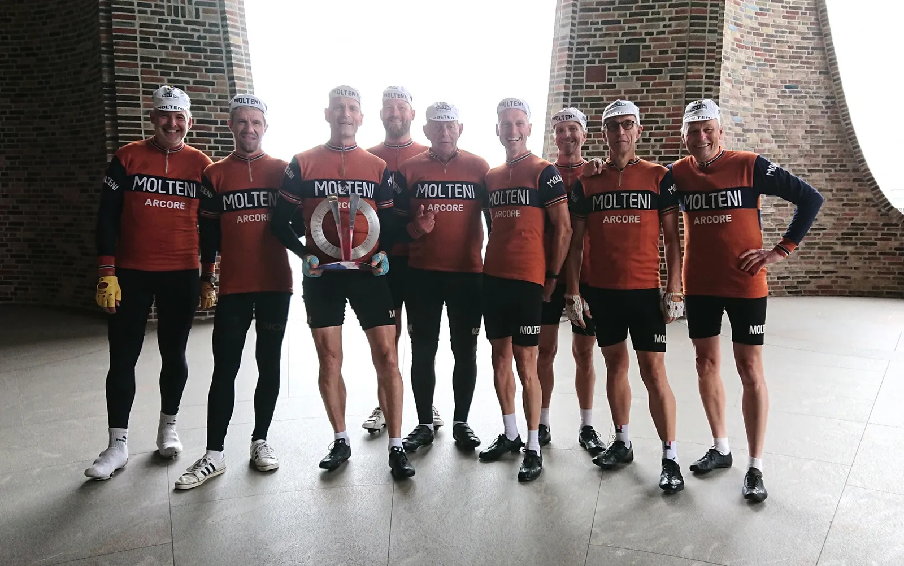

Mindeord: Chris Anker Sørensen var også retrocyklingens mand.

Chris Anker Sørensen, der døde lørdag efter at være blevet påkørt af en bil i Belgien, var ikke kun eks-professionel cykelrytter, tidligere danmarksmester og nuværende cykelkommentator på TV2. Han var også retrocyklingens mand.
Det viste han flere gange under TV2-transmissioner, når talen kom ind på cykelsportens historie. Når Rolf Sørensen fortalte om L’Eroica i Toscana, var Chris ikke sen til at gøre opmærksom på, at vi i Danmark også havde et retrocykelmiljø.
Men hvor kom den viden og interesse fra?
Vi skal tilbage til 2015, hvor Løjtnant Kasper Sørensen en vindblæst sommerdag, var ude og træne på de små krøllede landeveje nordvest for Aarhus. På et tidspunk fornemmer Kasper, at noget neongult kommer op på siden af ham. Kasper når lige at tænke: “Det kan umuligt være en motionist med trafikvest”, før han hører en dyb og rolig stemme sige: “Det er godt nok en lækker cykel – og fedt uldtøj”.

Stemmen var selvfølgelig Chris Anker Sørensens, der på det tidspunkt kørte for Tinkoff. Chris Anker havde på sin træningstur spottet en orangeklædt retrorytter, og i stedet for blot at drøne forbi, så valgte Chris Anker, at følges lidt med Kasper. For Chris Anker var oprigtig interesseret. Ikke kun i cykelsporten, som havde været en del af han liv siden han som 13-årig droppede fodbolden. Chris Anker var også interesseret i cykelsportes historie.
Det blev til en længere samtale med Kasper om cykelsportes historie og ikke mindst om Squadra Molteni.
Et par år senere mødte Squadra Moltenis sjællandske løjtnant, Kristian Blume, Chris Anker Sørensen ved PostNord Danmark Rundt. Her var Kristian forbi Chris Anker, og jokede med, at når han nu alligevel kørte i orange, så kunne han jo overveje, om han ikke skulle fortsætte karrieren i orange uld.

For et par uger siden fik Kristian så en henvendelse fra Chris Anker Sørensen. Chris Anker skulle i forbindelse med Vejles nye Grupetto Cykelfestival deltage i åbneningen, som var en cykelparade på historiske cykler gennem Vejle by. Derfor spurgte Chris, om han måtte køre som gæst på Squadra Molteni.

Fredag 17. september, kørte Chris Anker Sørensen paradekørsel i Vejle. Jeg havde lånt Chris Anker Sørensen min Colnago Eddy Merckx Molteni, en Moltenitrøje og kasket. Chris hyggede og snakkede med alle – og selvfølgelig stillede han også op til et holdfoto under Fjordhuset, hvor 3. etape af Tour de France 2022 skal starte.

Efter paradekørslen sagde jeg til Chris, at han kunne beholde Moltenitrøje og kasket – men så skulle han også få bygget sig en orange stålcykel. “Den er jeg med på”, grinede han.

Dagen efter blev livet revet væk fra Chris Anker Sørensen. Han er her ikke mere, og han efterlader sig en hustru og to døtre. Det gør ondt at skrive. Jeg får en mavepuster hver gang jeg tænker på det. Jeg har selv været der, da min kone døde for 14 år siden, og pludselig stod alene tilbage med 2 små børn. Jeg og resten af Squadra Molteni sender alle gode tanker til Chris Anker Sørensens familie i denne svære tid.
Tak for turen, Chris Anker.
/Kaptajn Bjørnsteen – og hele Squadra Molteni